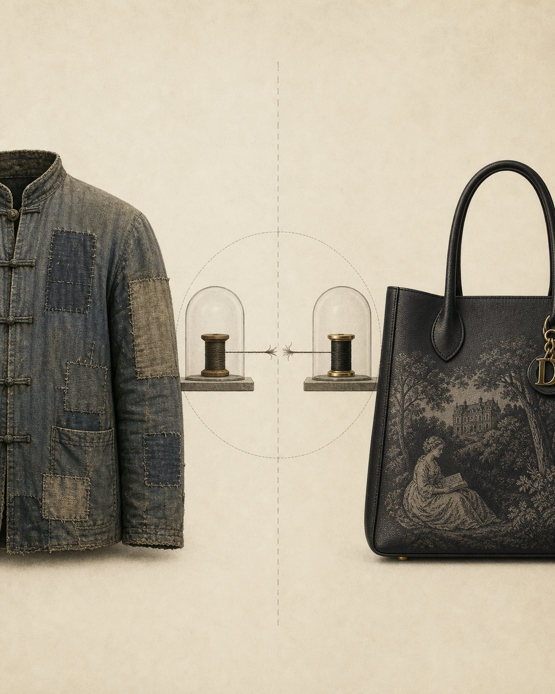

4 Performative Intellectualism: From BookTok to the Bottega Catwalk
Drawing on the cultural materials catalogued by Cartner-Morley (Cartner-Morley, 2026) and Sykes, on the academic literature on BookTok and reading communities now consolidated as a sub-disciplinary field (Cyberpsychology, Behavior, and Social Networking, 2025; Driscoll and Rehberg Sedo, 2019; Good e-Reader, 2024; Jerasa, 2025; Steiner, 2024), on the empirical work of Hasell and Chinn on aspirational lifestyle influence (Hasell and Chinn, 2023), on Inbar et al. on the aesthetic mode of knowing (Inbar et al., 2025), on Mazumdar on the Hindutva pop-influencer ecosystem (Mazumdar, 2026) and on Zhang’s pivotal historical analysis of the inversion of cultural capital during the Chinese Cultural Revolution (Zhang, 2021), what appears in cultural commentary as a counter-current to political anti-intellectualism is, on the reading developed here, more accurately described as a mausoleum culture: an aesthetic preservation of the surfaces of intellectual life under conditions in which its substantive practice is being defunded, unattended or deliberately attacked.
The argument is structured against three temptations:
the dismissive temptation (BookTok is fake reading; Substack is empty content; the Madame Bovary tote is shallow consumerism);
the celebratory temptation (BookTok is democratising literary culture; performative reading is reading; visibility of intellect is unambiguously good);
the diagnostic-only temptation (it is enough to describe the phenomenon).
Against all three: performative intellectualism is real, it is sociologically intelligible, it has measurable positive externalities that the analysis below credits, and its meaning is nonetheless structural — knowable only when situated against the simultaneous evisceration of the institutional homes of intellectual life analysed in Part I.
BookTok thumbnails.
BookTok is not a separate platform but a reading-centred subculture within TikTok, where literary taste is performed through short-form, affect-driven content. Its value lies less in critical engagement than in the visibility it grants to reading as a social signal, producing algorithmic “micro‑canons” shaped by emotional resonance rather than expertise. For research on performative intellectualism, BookTok offers a live laboratory of prescriptive recommendation, parasocial authority and accelerated cultural circulation. Concerns about cognitive offloading in such environments echo Hogenboom’s analysis of how frictionless AI tools can erode reflective effort (Hogenboom 2026).
Le livre, congédié.
The same hashtag, the other side of the demographic. Where the women’s grid arranged itself around the book — held, photographed, reacted to — the men’s grid mostly arranges itself around the body, with the book either absent or, where present, drawn from a parallel canon of self-improvement and stoic-flavoured therapy. The women perform reading; the men perform either being the character read about, or reading the kind of book that promises to turn them into one. In both cases the literary object is mediated by something else — affect, physique, ambition — and in neither does it function as the slow, private, recursive practice the older institutions of letters were built to sustain. The chapter is not moralising about either grid. It is observing what each grid substitutes for the practice the hashtag still nominally invokes.
A note on positionality. What follows has been written with awareness of Filatova’s warning (Filatova, 2021) that vice epistemology mobilised against anti-intellectualism tends to collapse into a political weapon of its own, and of Holt’s argument (Holt, 2025), already taken up in Chapter 3, that intellectualism and anti-intellectualism can each function as a fear-generator that narrows teachable disagreement. The categories mausoleum and reliquary developed below are not used here as moral judgements on the populations who participate in the cultural forms they describe. They are descriptors of a structural relation between visible artefact and unseen institutional substrate. When that relation inverts — when the visibility of the artefact rises while the institutions on which the practice it once signified depended are defunded, the implication is structural, not characterological.
4.1 The phenomenon, charitably described
A first descriptive section catalogues the phenomenon without sneer. The materials include:
BookTok. Scale (320bn views by late 2024), affective register (annotation, tears-on-camera, sensory engagement with the book as artefact), commercial impact (Sarah J. Maas, Colleen Hoover; Barnes & Noble’s sixty-store opening in 2025), and the pedagogical reception that has begun to crystallise into curricular use of the medium (Cyberpsychology, Behavior, and Social Networking, 2025; Jerasa, 2025; Smith, 2025; Steiner, 2024). Steiner’s typology distinguishing intensive and extensive reading practices (Steiner, 2024) is particularly useful for displacing the binary between “real” and “performative” reading that disfigures most public commentary on the platform.
Substack literary culture. The rise of newsletter-essayism as a viable economic form for thinking-as-personality (Pandora Sykes’s Books and Bits, Service95, the Charli xcx essay on celebrity intellect), and the structural displacement of legacy literary journalism into individual subscription economies. The platform’s ambivalence is constitutive: it both supplies a livelihood to genuinely valuable writers who could not have one elsewhere, and operates — as the more candid users acknowledge — as a high-volume mailing-list system whose aggregate effect on the information ecosystem is closer to spam than to journalism. This internal contradiction is treated below in §4.4.
Fashion’s literary turn. The Bottega Veneta campaigns featuring Zadie Smith and Barbara Chase-Riboud; Saint Laurent’s Baldwin reference; Proenza Schouler’s Cixous footnotes; the Dior ‘book bag’ series at £2,400 per unit (Cartner-Morley, 2026); the steady Instagram-shelf curation of canonical-authoritative titles in fashion-house creative-director feeds.
Pop-celebrity reading. Kim Kardashian’s bar studies, the White Lotus book-coding, Dua Lipa’s Service95, FKA twigs at the British Library, Kaia Gerber’s Library Science. The honest version of the phenomenon is that some of these are substantive (Lipa’s reading selections genuinely promote contemporary literary fiction outside the usual gatekeeping circuits) and some are not. The chapter declines the temptation to sort them into a clean hierarchy of authentic versus performative cases.
Literary adaptation as A-list project. Wuthering Heights and Pride and Prejudice as the marquee 2026 productions, with Greta Gerwig’s Narnia and Park Chan-wook’s Sympathizer treatments scheduled for 2027.
The ‘disgustingly educated’ aesthetic on TikTok: the visible display of a credential set (the philosophy seminar reading list, the post-doc-stack-of-books selfie, the Latin tattoo) as a markable cultural identity.
The section establishes the phenomenon’s coherence: a recognisable late-2020s structure of feeling.
4.1.1 What the phenomenon does well
A serious diagnostic argument cannot ignore the genuinely positive effects of the cultural moment under analysis. Three are unmistakable and the chapter credits them before turning to the structural critique.
First, the visibility of reading and reflective discussion has risen across demographic groups that the older literary-prestige infrastructure barely reached. The empirical record is thin but suggestive: post-pandemic young-adult fiction sales returned to and exceeded their previous peak; physical-bookstore footfall in many mid-sized European and North American cities recovered to levels unseen since the late 1990s; library borrowing, after a long secular decline, stabilised in 2023–2025 and has begun to register modest recoveries in several jurisdictions (Good e-Reader, 2024; National Endowment for the Arts, 2025). Whatever else is true about the Madame Bovary tote bag, its existence is parasitic on the fact that Madame Bovary has re-acquired a cultural recognisability it had partly lost.
Second, the platform-mediated reading culture has surfaced authors and traditions that the prestige-academic and prestige-publishing gatekeeping infrastructures would have continued to under-resource left to themselves. The BookTok-driven re-promotion of romantasy authors, of contemporary Black and Indigenous fiction, of translated fiction from outside the usual European canon, and of the re-discovery category (Stoner, the Lispector revival, the renewed attention to Annie Ernaux beyond her Nobel) is documented in the sub-disciplinary literature (Cyberpsychology, Behavior, and Social Networking, 2025; Jerasa, 2025) and should be acknowledged as a real democratisation gain, not retrofitted as a problem to be diagnosed.
Third, and perhaps most significantly, the platforms have demonstrated a capacity to break authors out of academic-prestige silos — to put serious work in front of populations the older infrastructure would have considered unreachable. This is the authentically counter-elitist face of the moment, and it is genuinely ambivalent rather than simply available for cynical re-description. A diagnostic argument that fails to register this forfeits its claim to charitable interpretation.
The Donna Tartt The Secret History phenomenon (sustained top-of-chart presence on BookTok for thirty months from late 2022), the Sally Rooney–Annie Ernaux paired recommendation circuit, and the Lispector re-translation programme by New Directions all illustrate algorithmic recommendation operating beneficially: not on the politically distorting register the literature on lifestyle influencers documents (Hasell and Chinn, 2023) but on the canon-broadening register that BookTok researchers consistently record (Cyberpsychology, Behavior, and Social Networking, 2025; Jerasa, 2025).
Vivian Gornick’s late-career Substack readership, the steady audience for Adam Tooze’s Chartbook (running at over 250,000 subscribers in early 2026), and the Phil Christman / Justin E. H. Smith / Helen Andrews triangle of essayists each demonstrate that the medium can sustain serious work outside the prestige publication infrastructure. None of them is a counter-example to the structural argument the chapter makes; each is a real qualification of it.
The growth of long-form literary YouTube — the Lex / Mira / Jack Edwards channel constellation, the BookTube discussions of Adichie, the Joel Christensen Greek-tragedy explainers — has created a cultural space in which serious commentary on canonical work reaches audiences in the hundreds of thousands. The viewer-time economics of long-form video do not perfectly map onto those of academic reading, but the divergence is smaller than the TikTok-comparison framing usually suggests.
The London Review of Books, In Our Time, The Rest is History, Talking Politics and Ezra Klein Show clusters now reach audiences that the print-only equivalents of the 1990s could not plausibly have aspired to. The format imposes its own constraints (the conversational register privileges fluency over written precision) but the net effect on access to serious commentary is positive.
These cases are not exhaustive and are not introduced as a defence against the diagnostic argument that follows. They are introduced because no honest account of the phenomenon can omit them.
4.1.2 What the phenomenon also does
By the same standard of evidential symmetry, a serious account must also register what the same broadly platformed cultural ecosystem amplifies in the opposite direction. The phenomenon of right-coded reactionary anti-reading content — the just trad wife content on TikTok and Instagram framing serious reading as a form of social-status pretension; the rise of the low-information honest aesthetic on right-wing podcasts in which the refusal to read theory or social science is itself coded as a virtue; the specific and well-documented incitement against the humanities and against academic work in trad-conservative influencer media for under-25 audiences (Hasell and Chinn, 2023) — is the symmetrical face of the same attention-extractive infrastructure. The Hasell-and-Chinn finding that aspirational lifestyle social-media use predicts anti-intellectual attitudes even when the content is not explicitly political (Hasell and Chinn, 2023) applies, on the empirical record, in both directions: the lifestyle-aspirational register and the anti-aspirational folksy-trad register both trade in the same currency, namely the displacement of substantive inferential work by affective-aesthetic affiliation.
The historical genealogy is also wider than the present moment suggests. Hofstadter’s anti-intellectual mother (Hofstadter, 1963), the Schlafly-era reactionary maternalism, and the neocon mom of the 2000s are recognisable ancestors of the current tradwife / RFK-mum / school-boards-against-books configuration. What is new is not the position; it is the medium. The platform economy has supplied this longstanding politics with infrastructure calibrated for adolescents and twenty-somethings, in formats whose fluency and emotional grain are optimised for retention. The political consequences of this re-platforming are not symmetrical with the gains documented above. They are, on the available evidence, larger.
Two scenes of transmission, seventy years apart.
The first scene is what cultural transmission used to look like. The second is what the institutions of letters increasingly look for instead — a visible audience, a single-camera set-up, and a contract on the desk waiting to be countersigned. The classical pediment that appears on both objects is the same emblem; what has changed is which party is signing it. In the first frame the publisher provided the book and the mother provided the time. In the second, the publisher provides the contract and the creator provides the audience.
4.2 Performative reading is reading — and what reading is
Drawing on Driscoll and Rehberg Sedo’s work on social reading (Driscoll and Rehberg Sedo, 2019), on Jerasa’s typology of reader identities on BookTok (Jerasa, 2025), on Steiner’s empirical distinction between intensive and extensive reading practices on the platform (Steiner, 2024), and on Driscoll and Squires’s playful ethnography of literary scenes (Driscoll and Squires, 2023), the chapter rejects the dismissive temptation. Reading has always been performative in part: display-shelves, marginalia, salons, book clubs, the Penguin spine in the breast pocket. The book has always been an artefact as well as a text; the reader has always been a self before others as well as a self alone. To deny this is to romanticise an austere private reading that historically existed only for a small leisured class.
Inbar et al. (Inbar et al., 2025) sharpen this point in a way the present chapter takes seriously. There is a legitimate aesthetic mode of knowing, distinct from but complementary to scientific or analytic modes; it works through resonance, recognition, and embodied response rather than through propositional inference. To treat the aesthetic mode as a deficient cousin of analytic knowing is to import a hierarchy that contemporary epistemology has been busy disowning for two decades. The performative dimension of reading on BookTok — the tears, the annotation, the public recognition of being moved by a sentence — is not a corruption of reading. It is reading in its aesthetic-cognitive register.
Three corollaries:
The performance does not falsify the reading. People who post their underlinings often actually do underline. The evidence from the BookTok-research literature, while still thin on long-term retention, does not support the dismissive view that the performance is parasitic on a non-existent practice (Jerasa, 2025; Steiner, 2024).
The book’s character as artefact is constitutive, not parasitic. Bourdieu’s analysis of the home library as a status object (Bourdieu, 1984) did not entail that the books in it were not also being read; both can be true simultaneously, and historically have been. Bourdieu’s later work on the forms of capital (Bourdieu, 1986) supplies the framework: cultural capital is constitutively oriented to recognition and display, and that orientation does not nullify the practical content the capital represents.
The visibility of reading is socially productive. Booksellers, teachers and librarians who report a renewed energy among under-thirty-fives readers are not deluded. The productive question is not whether the energy is real but what conditions are needed for it to translate into practices that compound over time, and whether those conditions are being supplied or withdrawn. That is a question about institutional infrastructure, which §4.3 takes up.
Jamais lu, mais tout vu.
The image is unusually self-aware. The creator does not perform reading; she announces, in caption and hashtag, that she has read none of it and is doing perfectly well — les classiques? vus partout. dans ma pile à lire? jamais. The book she holds is attributed to “T. H.” rather than D. H., which is no longer a problem the medium recognises as one. Bayard’s old joke about talking of books one has not read (2007) arrives here fully ironised, monetised at five-figure view counts, and defended on its own terms. The chapter’s argument is not about this constant; it is about what is happening, on the other side of the screen, to the institutions that historically produced the lu layer — and whether anything in the present arrangement is reproducing them.
4.3 Why, nonetheless, the phenomenon is mausoleic
The decisive analytical move. Granting all of the above, the chapter argues that performative intellectualism in the 2020s is mausoleic in the precise structural sense: what circulates as visible, monetisable, status-conferring reading is precisely the fraction of intellectual life that can be detached from its institutional infrastructure and reattached to the economy of attention as a branded surface; what cannot be so detached is what is being defunded or attacked.
What can be detached and monetised:
- The book as object (cover, title, embossed tote).
- The reader as figure (the photographed selfie with the volume).
- The ‘take’ as content (the eight-paragraph essay; the four-minute TikTok review).
- ‘Intellectual seriousness’ as personal-brand attribute.
- The author as quasi-celebrity guest in fashion-house front rows.
What cannot be detached, and is correspondingly being eroded:
- The slow accretion of disciplinary expertise over years.
- The institutionally mediated practices of peer review, mutual contestation and error correction.
- Generational transmission of training under conditions of unhurried attention.
- The civic capacity to coordinate justified belief across politically relevant populations (the disorientation thesis of Chapter 3).
- The stable archive: the institutional commitment to keep intellectually significant work permanently and affordably available to schools, libraries and individual readers.
The asymmetry is not accidental. The platform economy can monetise the first set; it cannot monetise the second, except by re-coding the second’s surface signs into the first set’s branded artefacts. Authoritarian governance can tolerate the first set; it cannot tolerate the second, because the second is precisely what generates the slow, error-correcting, peer-checked knowledge that authoritarianism’s signature claims must displace. The two pressures converge.
The argument therefore does not turn on whether BookTok is good or bad, on whether Pandora Sykes is sincere, or on whether the Dior Madame Bovary tote bag is or is not an enabling object for new readers. (Some specimens of each are, others are not, and the chapter takes no view on the proportions.) It turns on the relation between visible and invisible: on whether the surfaces that the platform economy promotes are still indexing a substrate the platform economy is corroding.
4.3.1 A historical analogy: Zhang on the Cultural Revolution
This relation has a striking historical analogue, which Zhang’s work on cultural-capital inversion during the Chinese Cultural Revolution (Zhang, 2021) allows us to read with new precision. In a period of violent state hostility to the educated classes, Zhang documents, clothing and consumer culture inverted the usual signalling direction: deliberately worn-out, mended, hand-patched garments became status objects, while visibly new or refined clothing became a political liability. The cultural-capital function did not disappear. It survived in rigorously inverted form, signalling proximity to the politically valued category (the worker, the peasant) by inconspicuous-consumption proxy rather than by educational or class display.
The analogy must be handled carefully, and the chapter does not suggest moral equivalence between Cultural-Revolution China and the contemporary anglosphere. The point is structural: under conditions of visible institutional hostility to intellectual life, consumer cultures do not simply abandon the cultural-capital function. They re-route it. The 1960s Chinese mended jacket and the 2026 Dior Madame Bovary tote bag are doing comparable structural work in opposite directions: the former projects proximity to a practice under threat (manual labour) by aestheticising its surface; the latter projects proximity to a practice under threat (literary education) by aestheticising its surface. Both are reliquaries in the technical sense developed in §4.4 below. Neither protects the practice they evoke from the political and economic forces eroding it.
Mausoleum and relic.

Two contemporary luxury objects citing aesthetic regimes from elsewhere. Left: a patched, frog-fastened jacket whose mended surface quotes the Cultural Revolution’s politicised aesthetic of worn-out virtue — Zhang’s (2021) inconspicuous consumption. Right: a Dior toile-de-Jouy tote whose pastoral lectrice mobilises eighteenth-century bourgeois literacy as luxury accessory. Between them, two spools under glass joined by a severed thread: semiotically opposed but structurally identical economies of cultural surface, each preserving the sign of intellect long after the practice it once indexed has been hollowed out.
4.3.2 The contradiction internal to the most candid commentators
The Cartner-Morley material is particularly revealing because it is internally aware of the contradiction it embodies and yet, on the available evidence, unable to resolve it. The Guardian fashion journalism that documents the Madame Bovary-tote phenomenon (Cartner-Morley, 2026) does so in the register of mild irony, as if the writer expects the reader to share the recognition that something has gone slightly wrong without quite having a vocabulary for what. The recognition is correct; the vocabulary is the one this chapter, and the broader argument of Part II, is attempting to supply. That the most articulate documenters of the phenomenon are themselves unable to name what they are documenting is itself diagnostic. It is the disorientation thesis again, operating one register up: the prestige cultural-journalism layer has the eyes to see the phenomenon and lacks the conceptual apparatus to place it.
4.4 The image: mausoleum and reliquary
A short conceptual section develops the image more rigorously.
The mausoleum is a structure that preserves the artefact while the practice associated with it has lapsed. The mausoleum’s value-claim is conservatorial: visit, behold, admire what was once living. The mausoleum makes no claim that the practice continues; it claims only that the artefact is worthy of preservation as evidence that the practice once was.
The reliquary is different. It preserves a fragment of a once-living body for veneration, and its value-claim is participatory: the fragment is held to retain some active virtue of the original. Touching the reliquary or possessing it confers a measurable benefit on the possessor.
Performative intellectualism in the 2020s combines both moves and trades on the slippage between them. The £2,400 Madame Bovary tote is, in this register, a reliquary: the claim implicit in purchase is that the object continues to participate in the cultural power of literary education — that the buyer becomes, by possession, a participant in the practice the bag evokes. The ‘disgustingly educated’ aesthetic is the cult that surrounds this participatory claim. Meanwhile, the surrounding apparatus — prestige reviewing, public-service broadcasters, university humanities departments, well-stocked libraries in working-class neighbourhoods, a stable archive of in-print classics at schools-and-libraries-affordable prices — is being treated as a mausoleum: visit, behold, but do not expect the institutions themselves to continue to be funded as living practices.
The combination is structurally unstable. A reliquary requires the existence of saints, which is to say, a community of recognised practice. When the practice is being defunded, the participatory claim attaches to nothing; the reliquary becomes a fashion accessory in the strict and exclusively decorative sense. The chapter’s diagnostic claim is that the present moment is at the inflection point of this instability.
4.4.1 Industry foot-dragging on formats and access
The reliquary structure interacts in specific ways with the cultural industries’ relationship to formats and access. The book industry’s posture towards e-books, audio and online critical formats has been characterised, since the 2010s, by reluctant and partial adaptation rather than by serious investment. The persistent gap between hardback prices and digital-edition prices in many markets (often under 25%, against unit production costs that are an order of magnitude lower); the proliferation of region-locked digital distribution; the slow, contested expansion of public-library e-book lending; the systematic out-of-print status of mid-list serious non-fiction even from the major university presses ten years after publication — these are not industry pathologies disconnected from the cultural argument. They are the supply-side counterpart of the mausoleum economy. The publishers’ commercial interest in the prestige object (the £30 hardback, the special edition, the fashion-house cross-promotion) has displaced their commercial interest in the durable, broadly accessible, archive-stable book. Schools and public libraries pay for this displacement in the most direct way: with the vanished availability of what the curriculum used to take for granted as accessible.
The structural pattern is not new. It is the well-documented platform extractivism described in Chapter 3, applied to the publishing supply chain. Authors, scholars and research institutions generate the content; the platform-aligned distribution layer captures the rents; the long-tail availability of the output — the public-good face of the value created — is unprotected. The academic and university-press analogue is by now a literature of its own (Diaz, 2021). What is worth pointing out here is the symmetry with the mausoleum logic: the same publishers happy to license a Madame Bovary image to Dior are letting the affordable schools-edition of mid-list serious work go quietly out of print.
4.4.2 Substack and the cottage-industry register
Substack and its platform competitors deserve a more careful treatment than dismissive shorthand allows. The medium has done two things at once: supplied a viable income to writers — both established and emerging — whose work would not be supported by contracting legacy outlets, and saturated the available reading attention of its subscribers with a quantity of “essay-form” content whose aggregate effect on the information ecosystem is not obviously positive. Most subscribers to most writers do not read most of the posts they receive; the platform’s economic model rewards volume of sent essays rather than depth of read essays; the long-form sub-stack post is, in the median case, the same length as a short magazine article but written in a fraction of the time and edited not at all.
This is not a complaint. It is a description of a medium whose structural properties have a definite cognitive output. For some writers — Adam Tooze, Brad DeLong, the Crooked Timber circle — the medium has made it possible to do work that would not have been done elsewhere. For most others, including many serious people whose work is genuinely useful in small doses, the medium operates as a cottage industry of half-baked thinking transmitted to the inboxes of subscribers who do not have the time to read it. In rather too many respects, Substack has begun to recall strategies long familiar from adjacent platforms: the patient saturation of the inbox with whatever a segmentation algorithm has determined might interest a user like the present one. Any grace period the service still merits will, on current trends, prove short — and its terminus, when it arrives, of the standard variety.
Two formats of the same household archive
The pile and the inbox furnish the same domestic genre: subscriptions accumulated in good faith, consulted with the regularity that good faith permits. The pile, by older convention, leaves the accounting to the conscience. The screen has the courtesy of a count.
4.5 The international register: re-routings outside the anglosphere
The mausoleum-reliquary configuration is not a fact about anglophone fashion or US-European publishing alone. The relationship between state hostility to substantive intellectual life and the displacement of cultural recognition into branded surface has analogues across multiple jurisdictions. Two are worth attending to here, because they do work the chapter’s primarily anglophone material cannot do on its own.
The first is Mazumdar’s analysis of the Hindutva pop-influencer ecosystem in digital India (Mazumdar, 2026). The phenomenon Mazumdar documents — pop-cultural lifestyle figures functioning as informal allies of the BJP propaganda apparatus, with no formal political affiliation and a content register that is, on its surface, unreservedly apolitical — maps with unusual precision onto the mechanism the chapter has been describing. The same surface-level tools (lifestyle aesthetics, aspirational visibility, parasocial intimacy) that operate in the anglophone case to displace deliberative practice into branded performance operate in the Indian case to channel mass affective identification into the political project of Hindu nationalism. The categories are not identical; the structural mechanism is.
The second is Zhang’s already-discussed work on inconspicuous consumption during the Chinese Cultural Revolution (Zhang, 2021), which the chapter has invoked as the historical analogue of the present anglosphere moment. To these can be added Gencoglu’s analysis of celebritisation of politics in Turkey (Gencoglu, 2021), which traces a parallel re-routing of recognition from substantive political-intellectual practice to celebrity-coded political performance under the AKP’s neoliberal-conservative hegemony.
The convergence of these cases supports a general claim: the displacement of intellectual recognition from institutional practice to platform-mediated surface is not a peculiarity of anglo- European fashion publishing. It is a feature of the relation between attention-extractive media and political projects hostile to deliberative culture, wherever that relation obtains. The specific surfaces vary — Dior tote bags here, Hindutva pop here, Cultural-Revolution worn jackets there, AKP-friendly celebrity intellectuals there — but the underlying re-routing is recognisable. This is the inversion of cultural capital that Zhang’s framework names with most precision (Zhang, 2021), and the chapter adopts the term as the canonical description of what it has been documenting.
4.6 An empirical pivot: who performs, who reads, who is left out
A short empirical section uses available reading-statistics data (Good e-Reader, 2024; National Endowment for the Arts, 2025; Reading Agency, 2024) to highlight the divergence between the cultural visibility of reading and its demographic distribution. Visibility is rising; aggregate reading is falling. The decline is sharpest among men, particularly working- class men, and the under-25 cohort generally; it is shallower among women and steeper among men, but present in both. The class patterns are at least as significant as the gender patterns and prepare the ground for Chapter 5.
The chapter’s specific contribution to this material is to insist on two qualifications.
First, the geography of the divergence matters and the available literature underplays it. Reading and reflective-cultural-consumption data, where they distinguish urban from rural respondents at all, consistently report sharper declines and lower baselines in rural populations (Heumann, 2026; Trujillo, 2022). The performative- intellectualism phenomenon analysed in this chapter is, by contrast, constitutively urban and, within urban populations, systematically concentrated in the higher-income deciles. This is not incidental to its meaning. The chapter has argued that the visible markers of intellectual life are circulating freely while the institutional substrate is being defunded. The geographic pattern of that circulation reinforces the diagnostic point: the cultural moment is strongly seen where it is least needed and is structurally absent where the underlying decline is steepest. That asymmetry is itself a political fact. The intellectual-life apparatus the rural reader in the small Spanish, French or American interior town would need to have access to is not the Bottega Veneta campaign featuring Zadie Smith; it is the local library that is closing, the regional newspaper that has folded, the rural high-school humanities curriculum that no longer attracts qualified teachers. The performative-intellectualism economy operates in a register that does not reach those readers, and in many cases trades on cultural forms whose institutional support those readers’ communities have already lost.
A complete vocabulary, in three books.
The arrangement is admirably economical. Three foundational works in three languages, one of each, are sufficient to furnish the room: The Republic, On Liberty, the first Critique — the introductory syllabus, in its visible rather than read form. The diploma above the chair names a Faculté des Lettres that ceased to exist in 1970, which the sitter, who appears not yet thirty, is therefore unlikely to have attended. The chair itself, the panelling, the standing globe and the unused teacup belong to a different occupant entirely — the emeritus whose study this once was, and whose tradition is being worn here as costume. The point is not that the mise-en-scène is fraudulent; it is that fraudulence is no longer the relevant category. The image is a working vocabulary, not a claim.
Second, the gender register of the phenomenon is more complicated than its dominant framing suggests. The performative-reader figure is, in its public iconography, predominantly young, urban and female; the populations whose reading is collapsing are predominantly young, peri-urban-or-rural and male. The temptation is to read this as a story about young women rescuing reading culture and young men abandoning it. The available evidence does not bear that reading. The young women who read most visibly on BookTok are concentrated in narrow class strata; the young men whose reading has collapsed are concentrated in different and broader ones; the reading practice of the wider female population, particularly the rural and working-class female population, is collapsing in parallel with the male equivalent and is simply not visibly documented because it does not generate platform-monetisable content (Heumann, 2026; Trujillo, 2022). The fashion-mediated visibility of literary signalling is a story about a small population of urban women in the upper-middle class and above; the gender-asymmetric collapse of reading is a story about a much larger population that the present cultural moment is barely registering.
Chapter 5 takes up these dynamics in detail.
4.7 Mausoleism in the institutional register
The mausoleum image has so far been deployed at the level of consumer culture and personal brand. It applies, with equal force, at the institutional level, in two specific configurations the chapter flags here for the more developed treatment in Chapter 7.
4.7.1 The protected curricular niche
University humanities departments, in the present configuration, contain — alongside genuinely vigorous research and teaching — a layer of programmes, subdisciplines, and specialised tracks whose empirical research output and pedagogical reach are minimal, whose graduate cohorts are vanishing, and whose institutional representation is nonetheless protected by the seniority structure of the academic profession. The phenomenon is well-documented at the descriptive level: the four-faculty department running a graduate programme that produces one PhD every five years; the named chair held continuously for twenty-five years by a single holder whose sub-field has fewer than thirty practitioners worldwide; the language-and-literature undergraduate degree that admits twelve students in a cohort and sustains seven full-time posts. The chapter declines the simple managerialist conclusion that these structures should be closed — some of them are genuinely valuable; what counts as valuable is contested for good reason; and the most aggressive criticisms of the structures come disproportionately from quarters whose interest in any humanities funding is questionable. The Reichman defence of academic freedom (Reichman, 2019) applies, mutatis mutandis, here.
But it would be intellectually dishonest to refuse to name what is also true, which is that the same structures function, in many cases, as institutional reliquaries: spaces in which credentialed practitioners preserve forms whose substantive practice is no longer being transmitted in the wider culture. The defence of these spaces is then often conducted in registers borrowed from a more robust period of disciplinary self-confidence — the canon matters, the discipline matters, the slow time of philological work matters — without the corresponding willingness to demonstrate to contemporary students why it does, in terms the students recognise. The result is an institutional politics in which the protected curricular niche becomes, in the eyes of the surrounding university and increasingly of its own students, a museum exhibit demanding continued public funding without continued public engagement. The defenders are sometimes right that the museum is worth funding. But the failure to articulate the case in terms recognisable to the publics whose support sustains the museum is, on its own, part of the problem the chapter is describing.
4.7.2 The training that is not happening
In a parallel direction: the universities’ most consistent failure of attention is towards the training of their own students in the production tools of contemporary digital scholarly work. Literary, historical, philosophical and humanistic graduate students in the 2020s typically receive minimal or no formal training in typesetting, version control, document-build pipelines, citation management, structured-data manipulation, the production of reproducible computational artefacts, or the maintenance of the software substrate that contemporary scholarly work — their own included — depends on. They emerge as humanists fluent in their disciplines and dependent, for the production of every digital deliverable they will ever produce, on commercial platforms whose extractive economic logic is the very subject of the cultural critique their disciplines are most apt to teach. The contradiction is not subtle.
The political consequences of this gap are real and converge with the chapter’s broader argument. A generation of humanistic scholars trained to critique platform capitalism and incapable of producing their work without platform-capitalist tools is not in a position to model, to its own students or to its publics, the alternative infrastructure on which any plausible reconstruction of public reason depends. The training in open document formats, open citation graphs, open publication pipelines and open archival preservation is not a technical specialisation tangential to the humanities curriculum. It is, in 2026, a precondition for the humanities curriculum’s claim to political-cultural relevance. That the great majority of humanities programmes have not yet taken this seriously is a measure of the depth of the institutional problem.
4.7.3 Ascription of meaning vs degree-name commercialisation
Finally, a third institutional symptom worth flagging — and the one closest to the chapter’s main argument. The slow renaming of humanities programmes in the Spanish, Italian and Portuguese- language university sectors over the last fifteen years toward the industrias culturales / industrie culturali / indústrias culturais register — Spanish Studies and the Cultural Industries, Literature and the Cultural Industries of the Spanish-Speaking World, Editorial and Audiovisual Industries — represents a specific case of the commodification dynamic the chapter has been tracing.
The renaming is not in itself objectionable; an honest acknowledgement of the labour-market destinations of humanities graduates is preferable to a polite fiction. But the direction in which the renaming has tilted is diagnostic: away from industrias culturales understood as a wide public-good ecosystem (publishing, public broadcasting, libraries, museums, education, civic journalism) and toward industrias culturales understood as the proprietary-platform export economy calibrated to compete with anglo-Saxon distribution majors on those majors’ own terms. The pedagogical and curricular consequences — the decline in attention to non-commercial publishing traditions, to the public-broadcaster register, to the small-press and regional-press traditions, to the under-monetised genres of literary work that nonetheless sustain a literate public — are substantial. They are also, in the chapter’s framing, recognisable. The degree programmes are the institutional reliquaries: holding the surfaces of the literary tradition while preparing their graduates to enter, at junior-precarious-contract level, the distribution apparatus that is hollowing the tradition out.
The degree, renamed. National accreditation registries have been recording, since the early 2010s, the steady migration of humanities programmes toward the cultural industries nomenclature (ANECA, 2014). The re-titling does not originate at the university; it follows a policy lexicon already in international circulation, in which cultural production is reframed as export competitiveness and platform-driven value (UNESCO and UNDP, 2013). What the new title preserves is the institutional infrastructure — the funding line, the staff allocation, the degree certificate; what it quietly retires is the practice the old title named. The curricular costs of that exchange, documented elsewhere (Hesmondhalgh, 2013), fall predictably on the non-commercial: small publishing traditions, public-service media, the slow forms of cultural production that no value-chain metaphor can comfortably accommodate.
The next chapter takes up the apparatus of cultural capital, the gendered choreography through which ‘smart-as-sexy’ negotiates older patriarchal structures, and the commodification of intellect under luxury-fashion economies that this chapter has only sketched.